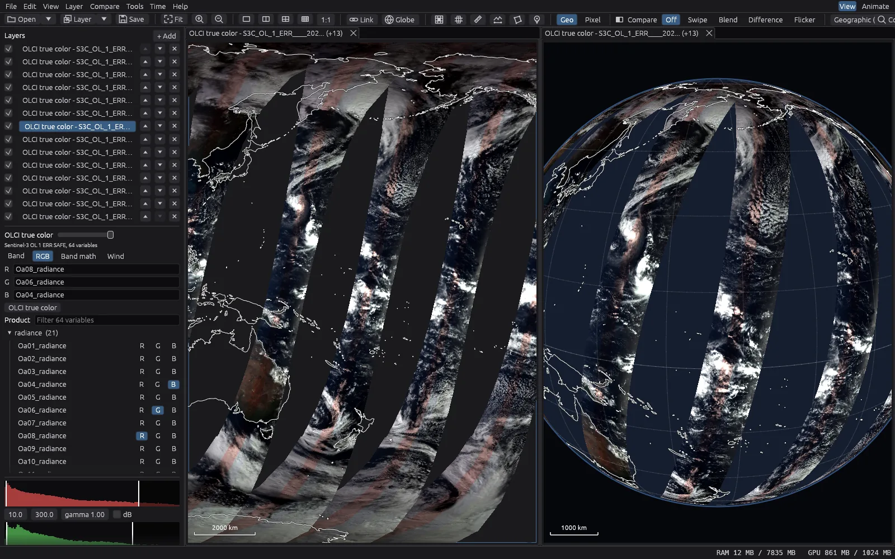
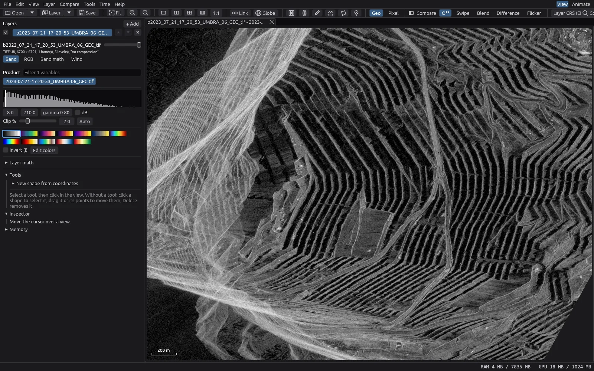
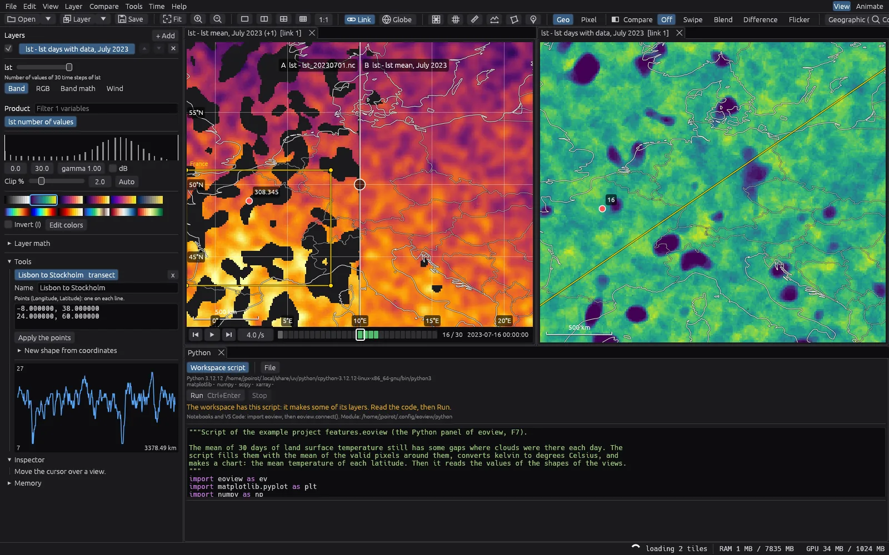

eoview
eoviewOpen the data, see it at once
eoview opens satellite products from your disk or from a server, and shows them in seconds.
eoview reads only the parts of a product that the view needs. The coarse level comes first, then the finer levels. You can pan and zoom through images of many gigabytes, and the window never waits for the disk or the network.
The GPU draws the data. It also reprojects the data, so swaths, map projections and the 3D globe show at the same speed.
eoview is written in Rust, from the file readers to the interface. It is one program with no runtime to install, and it draws through wgpu: Direct3D 12 on Windows, Vulkan on Linux and Metal on macOS.

Formats
- GeoTIFF and COG
- Strips, tiles, overviews and the usual compressions. BigTIFF.
- NetCDF-4 and HDF5
- Chunked datasets, CF scale, offset and fill values, latitude and longitude arrays.
- Zarr v2 and v3
- EOPF and GeoZarr products, sharding, Blosc and Zstd, multiscales.
- Sentinel SAFE
- Sentinel-1 GRD and SLC, Sentinel-2 L1C and L2A, Sentinel-3 OLCI and SLSTR.
- JPEG 2000
- Tiles and resolution levels.
- NITF
- SICD and SIDD radar products, complex pixels.
- Locations
- Local files and directories, HTTP and HTTPS, and S3 buckets. A disk cache keeps the remote data.
Open times
The time from the open command to the first pixels on the screen, and to the complete view at the resolution of the screen. eoview reads the header, then only the parts of the data that the view shows, in parallel.
| 01 s2 s3 s4 s | |
| Local files | |
| COG, 16-bit, 10000 x 10000 (200 MB) | 94 ms 133 ms |
| TIFF without overviews (200 MB) | 84 ms 688 ms |
| Sentinel-3 OLCI SAFE, NetCDF (0.9 GB) | 857 ms 892 ms |
| Sentinel-2 L1C, EOPF Zarr (0.7 GB) | 916 ms 1.4 s |
| Umbra SICD, NITF, complex (1.7 GB) | 572 ms 3.5 s |
| Remote files (HTTPS) | |
| Sentinel-2 L2A COG on AWS | 2.5 s 3.8 s |
| Umbra SAR COG on S3 | 2.1 s 3.2 s |
Measured with eoview --bench: median of 3 runs, a view of 1920 x 1080 pixels. Intel Core Ultra 7 265, 32 GB, Windows with WSL2 and a software GPU (llvmpipe). The local files are in the cache of the system. The remote files come from AWS (us-west-2) over the internet.
A season in 21 images
eoview opens a list of dates as one layer. The timeline plays them, and a render writes them to a video. These are 21 Sentinel-2 images of the Écrins massif (French Alps) from March to August 2025, read directly from the public archive on AWS.
Work with the data
- Compare
- Link the views. Swipe, blend, flicker or subtract two layers.
- Time series
- Open many dates as one layer, play them on a timeline, and calculate aggregates over time.
- Measure
- Inspect pixels, draw transects and regions, and pin points.
- Calculate
- Band math in a layer, and math between layers of different products.
- Python
- Run scripts and Jupyter notebooks on the layers of a view. Show the results as new layers and charts.
- Wind
- Show vector fields as arrows or as particles that move with the field.
- Output
- Export layers to GeoTIFF. Make figures (PDF, SVG, PNG) and videos of a time series.
- Workspaces
- Save the views, layers and settings of a project in one file. A product that changes on the disk opens again.
A month of ocean weather
Sea surface temperature (NOAA OISST, daily) and ocean wind (NOAA Blended Sea Winds, every 6 hours) from 10 September to 9 October 2025, over the Blue Marble of NASA. Typhoon Ragasa crosses the Philippine Sea, and the hurricanes Humberto and Imelda turn between the Bahamas and Bermuda.
The wind is a layer of particles that follow the field. A render of 715 frames turns the globe with --spin 0.5 while the time steps advance, with blends between them.
A year of Arctic sea ice
330 daily files of sea ice concentration from OSI SAF, 2025, over the Blue Marble of NASA. The grid of the files is polar stereographic, with latitude and longitude arrays. eoview puts it on the globe as it is, without a conversion.
A band math expression, mask(ice_conc, ice_conc < 15), removes the open water. The days with missing satellite passes are not in the series. A render writes one frame for each two days, with blends between them.


Download
eoview is free and open source (MIT or Apache-2.0). It runs on Windows, Linux and macOS, and updates itself.